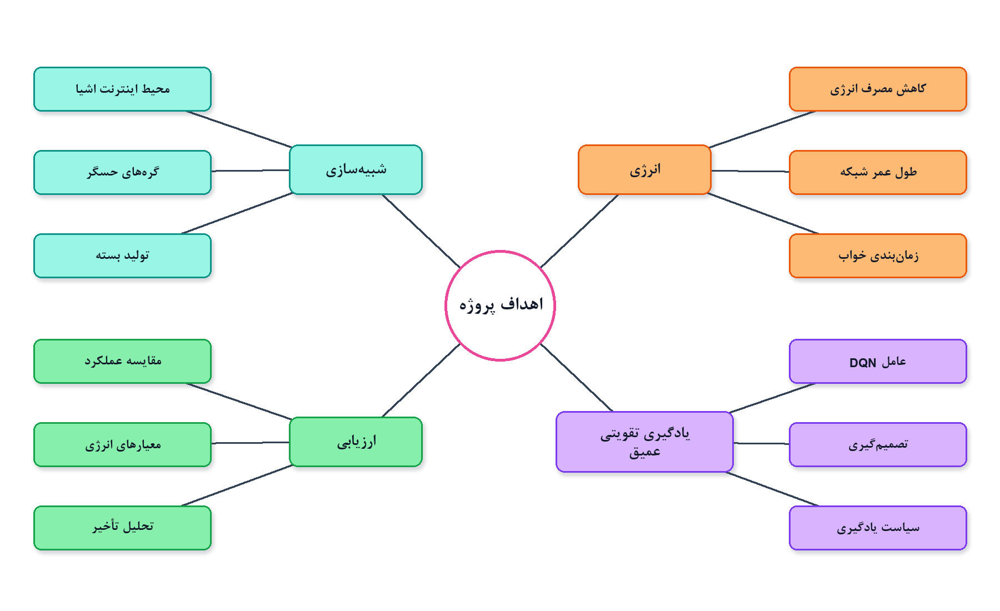

بهینهسازی مصرف انرژی در شبکههای اینترنت اشیا با یادگیری تقویتی عمیق
IoT Energy Optimization using Deep Reinforcement Learning (DQN)
این فایل بازنویسیِ گزارش رسمی داخل docs/report است، اما برای ارائه شفاهی نوشته شده: چه کار کردید، فرقش با مقالهها چیست، فردا چه بگویید و داشبورد را چطور اجرا کنید.
دانشجو
امیرمحمد ذکاوتی اول
استاد راهنما
دکتر منیره عبدوس
منبع اصلی
گزارش پروژه کارشناسی، تابستان ۱۴۰۵
نتایج رسمی
۳ گره، افق ۵۰، آموزش ۶۰۰۰، میانگین ۵ اپیزود، بذر ۴۲
۰. نقشه ارائه فردا — اول این را بخوانید
گزارش رسمی پروژه سه فصل دارد: کلیات، مفاهیم و کارهای مرتبط، روش و نتایج. ارائه شما باید همین سه فصل را بگوید، نه جزئیات تکتک فایلهای کد. زمان پیشنهادی ۱۵ تا ۲۰ دقیقه صحبت + پرسش.
دقیقه
چه بگویید
چه نشان دهید
۰ تا ۲
عنوان، مسئله یکجملهای، چرا انرژی مهم است
شکل اکوسیستم IoT
۲ تا ۵
اهداف و محدوده؛ چه چیزی را عمداً انجام ندادید
شکل مسئله سهضلعی و اهداف
۵ تا ۸
مقالهها و فرق کار شما با آنها
جدول مقایسه فصل ۲
۸ تا ۱۳
معماری، انرژی فاصلهآگاه، کانال، پاداش، DQN
خط لوله روش + یک فرمول
۱۳ تا ۱۷
نتایج جدول و تفسیر نمودار
جدول ۳-۳ و شکل مقایسه سیاستها
۱۷ تا ۲۰
محدودیت، آینده، جمعبندی یک جملهای
داشبورد زنده اگر وقت بود
چی بگو: یک جمله اول ارائه: «من یک شبیهساز شبکه حسگر ساختم که در آن عامل DQN برای هر گره بین ارسال و خواب تصمیم میگیرد تا هم عمر شبکه بماند هم داده به دروازه برسد.»
چهار عدد که باید حفظ باشید:
طول عمر DQN = ۴۹٫۴ گام | بسته موفق = ۲۹٫۴ |
PDR = ۰٫۷۶ | میانگین AoI = ۱۶٫۲
اگر داشبورد را با ۱۰ گره و آموزش کوتاه اجرا کنید، ممکن است DQN از Random ضعیفتر دیده شود. اعداد رسمی فقط برای ۳ گره و ۶۰۰۰ گام آموزش معتبرند. این را خودتان اول بگویید.
۱. مسئله، اهمیت و کاری که واقعاً انجام دادید
۱-۱ مسئله به زبان ارائه
اینترنت اشیا (Internet of Things یا IoT) شبکه دستگاههایی است که حس میکنند و داده میفرستند. طبق Transforma Insights تعداد اتصالات از حدود ۲۱ میلیارد در ۲۰۲۵ به حدود ۴۸ میلیارد در ۲۰۳۵ میرسد [1]. خیلی از گرهها باتری محدود دارند و تعویض باتری سخت یا غیرممکن است.
مسئله این پروژه یک تصمیم دودویی در هر گام زمانی است:
ارسال (transmit): حس کردن + ساخت بسته + پرداخت انرژی ارسال. داده تازهتر میشود، باتری زودتر تمام میشود.
خواب (sleep): هزینه خیلی کم. انرژی میماند، ولی اگر همه بخوابند شبکه هیچ سرویسی ندارد.
شکل ۱-۱ گزارش رسمی. تمرکز پروژه لایه اول است: گره حسگر تا دروازه، نه ابر.شکل ۱-۲. سه ضلع مسئله: مصرف انرژی، تأخیر/کهنگی اطلاعات، اتلاف بسته.
چی بگو: بگویید: «اگر همیشه ارسال کنیم شبکه میمیرد؛ اگر همیشه بخوابیم هیچ دادهای نیست. کار من ساختن سیاستی است که این سه ضلع را با هم مصالحه کند.»
۱-۲ اهداف واقعی پروژه

شکل ۱-۳. چهار شاخه کار: شبیهسازی، انرژی، یادگیری تقویتی عمیق، ارزیابی.
شبیهساز گره، بسته، دروازه، انرژی فاصلهآگاه، کانال با افت بسته، و سن اطلاعات (AoI).
محیط استاندارد Gymnasium و تابع پاداش چندهدفه.
آموزش عامل DQN با Stable-Baselines3.
مقایسه با سه خطپایه: ارسال دائمی، خواب دائمی، تصادفی.
داشبورد Streamlit برای اجرا، آموزش و مقایسه.
۱-۳ محدوده — این را با افتخار بگویید نه با خجالت
شبیهسازی نرمافزاری است؛ سختافزار واقعی ندارد.
ارتباط تکگام به دروازه است؛ مسیریابی چندگامه ندارد.
حداکثر ۱۰ گره برای سازگاری با DQN گسسته.
داده حسگر مصنوعی است.
مدل کانال و انرژی آموزشی و فاصلهمحور است، نه مدل رادیوی کامل.
در کد فعلی صف بسته جداگانه وجود ندارد؛ تصمیم هر گام فوری است.
چی بگو: اگر استاد گفت «پس کار شما ساده است» جواب دهید: «ساده بودن عمدی است. شکاف پژوهشی گزارش رسمی همین است: سیستم سبک و قابل توضیح برای تصمیم خواب/ارسال با DQN، نه تکرار مسیریابی پیچیده مقالات.»
۲. مفاهیم لازم برای حرف زدن، و فرق با مقالهها
۲-۱ چند مفهوم که باید روان بگویید
شبکه حسگر بیسیم (WSN): تعداد زیادی گره کمانرژی که داده را به چاهک یا دروازه میفرستند. پرهزینهترین کار معمولاً ارسال رادیویی است [3].
سن اطلاعات (Age of Information یا AoI): چقدر از آخرین بهروزرسانی موفق در مقصد گذشته. اگر بسته برسد ریست میشود، وگرنه هر گام یک واحد زیاد میشود. با «تأخیر یک بسته در راه» فرق دارد؛ حتی اگر هیچ بستهای در راه نباشد AoI باز هم پیر میشود.
یادگیری تقویتی (RL): عامل با محیط تعامل میکند و پاداش میگیرد؛ برچسب صحیح از قبل نیست. اجزا: وضعیت، عمل، پاداش، سیاست [2].
DQN: تابع Q(s,a) را با شبکه عصبی تقریب میزند. دو ترفند پایداری: حافظه بازپخش تجربه و شبکه هدف. برای عمل گسسته مناسب است؛ برای همین اینجا انتخاب شده.
Q(s,a) ≈ r + γ maxa′ Q(s′, a′)
۲-۲ مقالههایی که در گزارش اسم بردید — برای هر کدام یک پاراگراف حرف بزنید
اینها را حفظ نکنید؛ منطق هر کدام را بگویید و بعد فرق خودتان را.
[1] Transforma Insights، ۲۰۲۶.
آمار رشد IoT از ۲۱ به ۴۸ میلیارد اتصال. فقط برای انگیزه مقدمه است، نه ورودی شبیهساز.
[2] Alsheikh و همکاران، ۲۰۱۴.
مرور یادگیری ماشین در WSN. به شما اجازه میدهد بگویید مدیریت انرژی هوشمند در ادبیات این حوزه جا افتاده است.
[3] Mohamed و همکاران، ۲۰۱۸.
مرور کاربردها و مسیریابی انرژیکارآمد. زمینه محدودیت انرژی و پروتکلهای کلاسیک.
[4] Heinzelman و همکاران، LEACH، ۲۰۰۰.
پروتکل کلاسیک خوشهبندی و چرخش سرخوشه برای پخش مصرف انرژی. نماینده روش سنتی قاعدهمحور. شما LEACH را پیاده نکردید؛ آن را بهعنوان نقطه شروع ادبیات میآورید.
[5] Kaur و Chanak، ۲۰۲۱.
مسیریابی هوشمند انرژیکارآمد برای IoT. پیام اصلی: روشهای سنتی در شرایط پویا کم میآورند و به طرح هوشمند نیاز است.
[6] Meng و همکاران، ۲۰۱۹.DRL برای بهینهسازی توپولوژی شبکههای خودسازمانده. نزدیک به ایده شماست ولی مسئلهشان توپولوژی است نه تصمیم دودویی خواب/ارسال تکگام.
[7] Liu و همکاران، EDRP-GTDQN، ۲۰۲۵ — مقاله کلیدی فصل ۲.
مسیریابی انرژی و تأخیر با ترکیب نظریه بازی + شبکه گراف + DQN. اول با نظریه بازی سرخوشه انتخاب میشود، بعد DQN مسیر را میچیند. نسبت به LEACH و DEEC بهبود گزارش کردهاند.
فرق با شما: آنها مسیریابی و خوشهبندی پیچیده دارند؛ شما مدیریت مستقیم خواب/ارسال در توپولوژی ستارهای ساده. مدل آنها سنگینتر است و برای محیط آموزشی سبک مناسب نیست.
[8] Banerjee و همکاران، NashDQNSleep، ۲۰۲۵ — نزدیکترین کار به ایده خواب.
زمانبندی خواب در Industrial IoT با DQN و تعادل نش، برای انرژی و AoI. تصمیم توزیعشده و هماهنگی بین گرهها.
فرق با شما: آنها بازی چندگرهی و محیط صنعتی پیچیدهاند. شما یک عامل مرکزی، شبکه ساده، و حلقه کامل شبیهساز + داشبورد + مقایسه خطپایه دارید. ایده مشترک: DQN برای خواب و توجه به AoI.
[9] Leong و همکاران، ۲۰۱۸.
زمانبندی حسگر در سامانه سایبر-فیزیکی با DRL. نشان میدهد زمانبندی حسگر با یادگیری تقویتی عمیق یک مسئله شناختهشده است.
چی بگو: جمله جمعبندی ادبیات: «مقالات قوی روی مسیریابی، نظریه بازی یا اینترنت اشیا صنعتی تمرکز دارند. شکاف گزارش من این است که یک سامانه سبک، قابل اجرا و قابل توضیح برای تصمیم خواب/ارسال با DQN کم است. کار من پر کردن همین شکاف آموزشیپژوهشی است، نه شکست دادن EDRP-GTDQN روی بنچمارک آنها.»
شبیهسازی در app/simulation/: گره، بسته، کانال، انرژی، دروازه، زمانبند.
یادگیری در app/rl/: محیط، پاداش، عامل، مربی.
تحلیل در app/analytics/: معیار، مقایسه، نمودار.
ورود برنامه main.py است. تنظیمات مرکزی در app/config/settings.py است.
۳-۲ یک گام شبیهسازی — برای پای تخته
گرههای زنده گرفته میشوند.
سیاست برای هر گره transmit یا sleep میدهد.
اگر ارسال: بیداری، حس کردن (۰٫۰۱ ژول)، ساخت بسته، پرداخت انرژی ارسال فاصلهآگاه، آزمایش کانال.
اگر خواب: حدود ۰٫۰۰۱ ژول.
AoI برای تحویلشدهها ریست، برای بقیه +۱.
تصویر لحظهای ذخیره میشود و به مشاهده و پاداش تبدیل میگردد.
Etx(d) = 0.05 · [1 + 0.5 · (d / 50)2]
p(d) = clip(1 − 0.35 · (d / 50), 0.45, 1)
نکته مهم: انرژی تلاش ارسال همیشه کم میشود، حتی اگر بسته نرسد. دروازه در مرکز ناحیه ۱۰۰×۱۰۰ یعنی نقطه (۵۰، ۵۰) است و فقط بستههای موفق را نگه میدارد.
۳-۳ محیط یادگیری
مشاهده ابعاد 2n+3 دارد: نسبت انرژی هر گره، پرچم زنده بودن، زمان نرمال، نسبت دریافت، AoI نرمال. برای ۳ گره یعنی ۹ عدد.
عمل برای n ≤ 10 به صورت Discrete(2^n) است. برای ۳ گره فقط ۸ عمل. هر بیت یک گره است: ۱ ارسال، ۰ خواب. برای همین سقف ۱۰ گره در داشبورد گذاشته شده؛ با ۱۰ گره ۱۰۲۴ عمل دارید و آموزش کوتاه کافی نیست.
ΔP بسته موفق جدید، α نسبت زنده، η نسبت انرژی، ΔE مصرف همین گام، ΔD مرگ گره، Ā کهنگی نرمال، ΔL افت جدید. وزنها دستیاند (heuristic)؛ اگر استاد پرسید بگویید بهینهسازی وزن انجام نشده و این یک محدودیت است.
عامل: Stable-Baselines3 DQN با MlpPolicy، نرخ یادگیری ۰٫۰۰۱، γ=۰٫۹۵، بافر ۵۰۰۰۰، دسته ۶۴، اکتشاف تا ۰٫۰۵.
۴. نتایج — همان اعداد گزارش رسمی
تنظیمات جدول ۳-۲ گزارش: ۳ گره، انرژی اولیه ۱ ژول، افق ۵۰، آموزش ۶۰۰۰، ۵ اپیزود، بذر ۴۲، LOSS_FACTOR=0.35، کف تحویل ۰٫۴۵.
سیاست
Lifetime
Packets
Dropped
PDR
AoI
انرژی باقی
ارسال دائمی
15.4
26.6
11.2
0.70
—
0.00
خواب دائمی
50.0
0.0
0.0
0.00
50.0
2.85
تصادفی
33.0
26.2
11.2
0.70
—
0.00
DQN
49.4
29.4
9.4
0.76
16.2
0.03
شکل ۳-۲ گزارش. DQN عمر نزدیک خواب دائمی، بسته و PDR بهتر از ارسال دائمی.ارسال دائمی تا حدود گام ۱۵ میمیرد. تصادفی تا حدود ۳۳. DQN انرژی را جیرهبندی میکند و تا نزدیک ۵۰ زنده میماند.خواب دائمی خط راست با شیب ۱ است. DQN گاهی سن را بالا میبرد و بعد با ارسال ریست میکند؛ تازگی فدای زنده ماندن کامل شبکه نمیشود.
چی بگو: تفسیر یک جملهای جدول: «ارسال دائمی سرویس میدهد ولی زود میمیرد؛ خواب دائمی زنده میماند ولی سرویس صفر است؛ DQN تقریباً تا آخر زنده میماند و از ارسال دائمی هم بسته موفق بیشتری میرساند چون افت کمتری دارد.»
AoI پایانکار برای سیاستهایی که همه گرهها مردهاند گمراهکننده است، چون میانگین فقط روی زندهها حساب میشود و ممکن است صفر دیده شود. برای Always Transmit از روی منحنی زمانی حرف بزنید نه از عدد پایانی.
بهرهوری انرژی (بسته موفق بر ژول) در داده خام حدود ۹٫۸۹ برای DQN در برابر ۸٫۸۷ برای ارسال دائمی است. جهش اصلی طول عمر است نه چند درصد بهره ژول.
محدودیت نتایج: فقط همین تنظیمات. مدل کانال آموزشی است. فضای عمل با افزایش n منفجر میشود. ۵ اپیزود برای آزمون آماری سخت کم است.
کار آینده اگر پرسیدند:PPO یا چندعاملی برای شبکه بزرگتر، وارد کردن فاصله در مشاهده، مدل کانال دقیقتر، آزمایش سختافزار مثل ESP32.
۵. فردا چطور اجرا کنید و چه چیزی نشان دهید
۵-۱ امشب، قبل از خواب — این را انجام دهید
۱. در پوشه پروژه محیط مجازی را فعال کنید و وابستگی را نصب کنید اگر از قبل نیست:
pip install -r requirements.txt
۲. داشبورد را باز کنید:
streamlit run main.py
۳. در نوار کناری دقیقاً اینها را بگذارید تا به گزارش نزدیک شوید:
تعداد گره = ۳ (نه ۱۰ پیشفرض) | حداکثر گام = ۵۰ (نه ۲۰۰) |
انرژی اولیه = ۱ | بذر = ۴۲ | گام آموزش = ۶۰۰۰ (لغزنده ممکن است روی ۳۰۰۰ باشد؛ جابهجا کنید)
۴.Train DQN را بزنید و صبر کنید تا مدل در experiments/models/dqn_iot_energy ذخیره شود. این کار را امشب بکنید تا فردا آموزش زنده طول نکشد.
۵. یکبار Compare Policies را بزنید و ببینید جدول ظاهر میشود. اسکرینشات بگیرید برای پشتیبان اگر وایفای سالن مشکل داشت.
۵-۲ سناریوی نمایش زنده در جلسه
اگر وقت کم است، آموزش را تکرار نکنید؛ مدل ذخیرهشده را بار کنید.
همان تنظیمات ۳ / ۵۰ / ۴۲ را نگه دارید.
سیاست را Always Transmit بگذارید و Run Simulation بزنید. نشان دهید شبکه زود میمیرد و بسته میآید.
سیاست Always Sleep را اجرا کنید. نشان دهید انرژی میماند و بسته صفر است، AoI بالا میرود.
سیاست DQN را اجرا کنید. نقشه گرهها، منحنی انرژی و PDR را نشان دهید.
در پایان Compare Policies تا جدول چهار سیاست یکجا دیده شود.
داشبورد انگلیسی است. روی دکمهها با انگشت توضیح فارسی بدهید: Run Simulation یعنی اجرای یک سیاست؛ Train DQN یعنی آموزش؛ Compare Policies یعنی مقایسه چند اپیزودی.
اگر آموزش یا مدل خراب شد، وحشت نکنید. نمودارهای رسمی داخل گزارش و پوستر را نشان دهید و بگویید اینها با همان تنظیمات جدول ۳-۲ بازتولید شدهاند. فایلها:
assets/charts/policy_comparison.png
assets/charts/energy_curves.png
assets/charts/aoi_curves.png
پوستر: docs/poster/poster.html یا Final_Poster_A1.pdf اگر چاپ کردهاید
کد داخلی reward.py خطبهخط — مگر جزئیات پاداش را بخواهند.
نوتبوکها؛ فقط بگویید شش دفتر آزمایش گامبهگام وجود دارد.
آموزش ۶۰۰۰ گام زنده وسط حرف زدن؛ وقت را میکشد.
۶. پرسشهایی که احتمال دارد فردا بیاید
چرا DQN نه PPO؟
چون عمل گسسته و برای ۳ گره فقط ۸ تاست. DQN انتخاب استاندارد همین فضاست. برای شبکه بزرگتر PPO یا چندعاملی منطقیتر است و در کارهای آینده آمده.
چرا ۳ گره نه ۱۰؟
با ۳ گره فضای عمل ۸ تایی است و ۶۰۰۰ گام برای نشان دادن یادگیری کافی است. با ۱۰ گره ۱۰۲۴ عمل است و بودجه کوتاه معمولاً کم است. عدد ۳ برای شفافیت است.
مختصات گره را عامل میبیند؟
نه مستقیم. فاصله از راه تخلیه انرژی و افت بسته دیده میشود. این محدودیت مشاهده است.
چرا از کتابخانه آماده استفاده کردید؟
ارزش کار در صورتبندی مسئله IoT و حلقه ارزیابی است، نه بازنویسی DQN. استفاده از Stable-Baselines3 رایج و قابل دفاع است.
این پژوهش است یا مهندسی؟
هر دو. پژوهش در MDP، پاداش و مقایسه؛ مهندسی در معماری ماژولار و داشبورد.
اگر DQN از تصادفی بدتر شد چه میگویید؟
همگرا نشده: فضا بزرگ یا بودجه کم یا پاداش بد. در تنظیم رسمی گزارش این اتفاق نیفتاده.
نوآوری شما دقیقاً چیست؟
الگوریتم DQN مال ادبیات است. مال شما: شبیهساز فاصلهآگاه با افت و AoI، مشاهده و پاداش، اتصال به عامل، مقایسه سه خطپایه، و ابزار نمایش. طبق شکاف فصل ۲: سامانه سبک خواب/ارسال.
نتیجه: عمر ۴۹٫۴، بسته ۲۹٫۴، PDR برابر ۰٫۷۶، AoI برابر ۱۶٫۲.
فرق با مقالات: آنها مسیریابی/بازی/صنعت سنگین؛ من تصمیم خواب/ارسال تکگام و قابل نمایش.
محدودیت: تکگام، ۳ گره، کانال ساده، پاداش دستی.
دمو: گره=۳، گام=۵۰، بذر=۴۲، آموزش از قبل، بعد مقایسه سیاستها.
جمله آخر: «یادگیری تقویتی عمیق در این شبیهسازی کنترلشده، مصالحه بهتری میان عمر شبکه و سرویس داده ساخت؛ تعمیم به سختافزار واقعی کار بعدی است.»
منابع کامل همان ۹ مرجع گزارش رسمی در docs/report/IoT-Energy-Optimization-DRL-Report.pdf و docs/references/references.bib است. این فایل جایگزین آن گزارش نیست؛ راهنمای گفتن آن است.